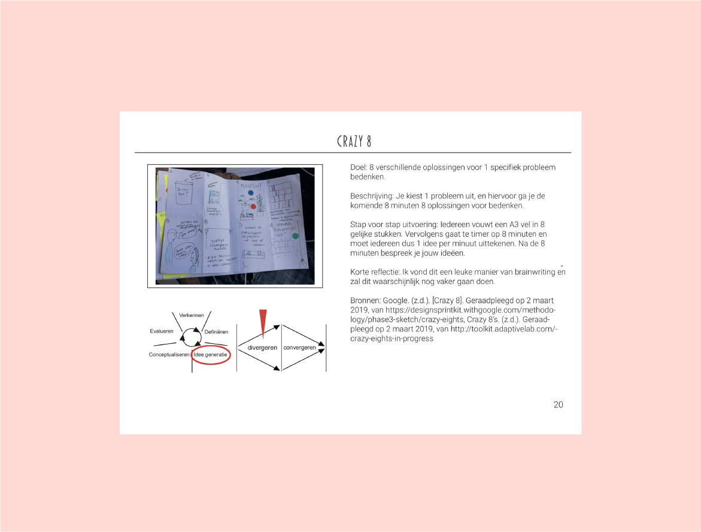
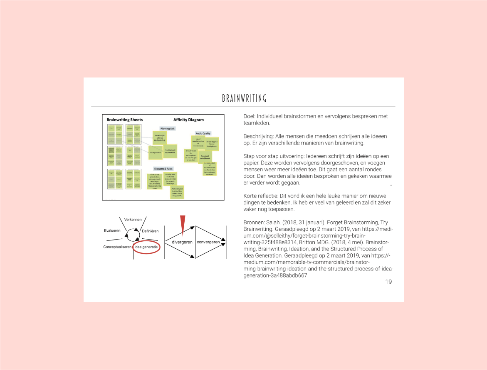

Situatie
Om nog meer onderzoeksvormen te leren kennen heb ik voor een vak genaamd New Product Development een ontwerphandleiding gemaakt. Dit is eigenlijk een boekje dat veel verschillende ontwerpprocessen en onderzoeksvormen bevat, met uitleg.
De opdrachtgever was dus mijn docent, maar wel met de gedachte dat het iets is wat je echt voor jezelf maakt en de rest van jouw studie (en misschien later zelfs ook) nog kan gebruiken.
Taak
Dit boekje is uiteindelijk een handleiding geworden op A5 formaat, ik heb erook een fysiek variant van met een ringband. Ik wilde een simpel design met niet te veel details, zodat de pagina's makkelijk te lezen en scannen waren.
Activiteit
Ik heb in inDesign alle pagina's gemaakt, en daarna nog een simpele vormgeving toegevoegd. Toen heb ik mij nog gefocust op de inhoudsopgave, om zeker te weten dat deze klopte.
Daarna heb ik een paar proefprintjes gemaakt om zeker te weten dat het boekje netjes uit zou komen, en daarna heb ik het laten inbinden.
Resultaat
Ik ben erg tevreden met dit boekje. Ik denk dat het een goed hulpmiddel is, aangezien ik hem best vaak gebruik tijdens de vakken die ik nu volg.
Het was leuk om te doen, elke week moest ik een paar nieuwe pagina's toevoegen en daarom was dit ook eigenlijk best goed te doen.
Reflectie
Ik heb veel geleerd van het maken van dit boekje, over het werken met inDesign en daarrnaast ook over de methodies die ik er in aan het plaatsen was.
Bekijk het hele boekje in dit PDF Bestand